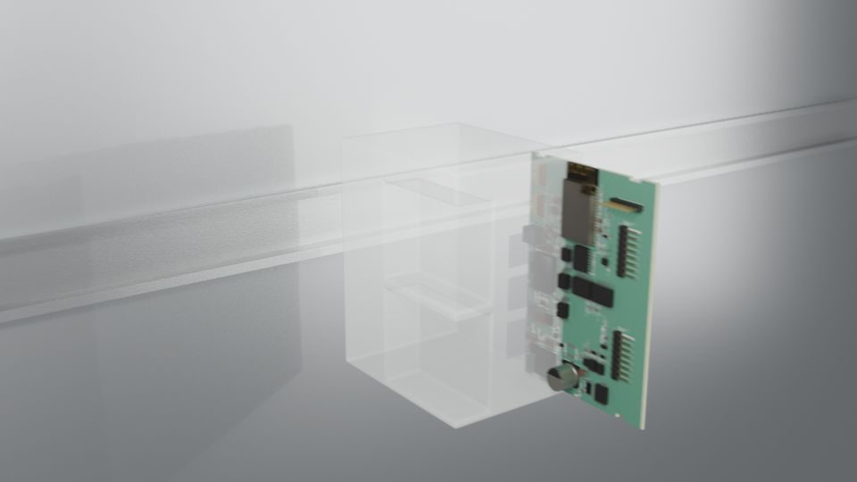
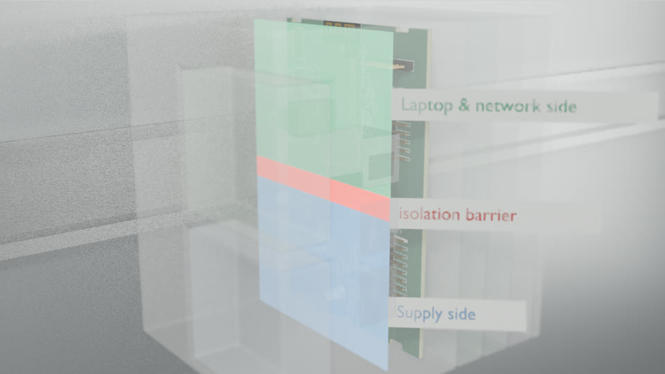
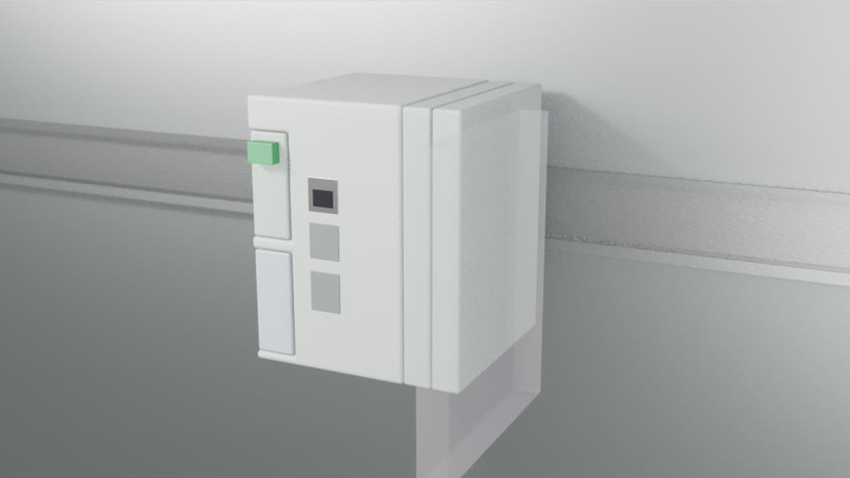
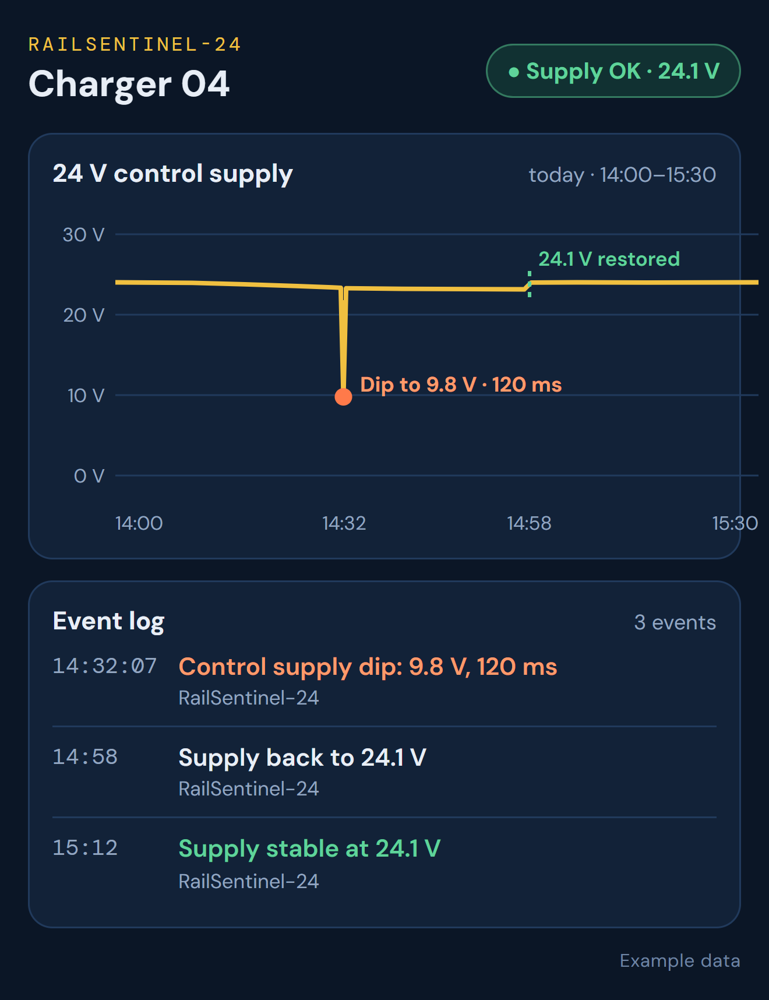
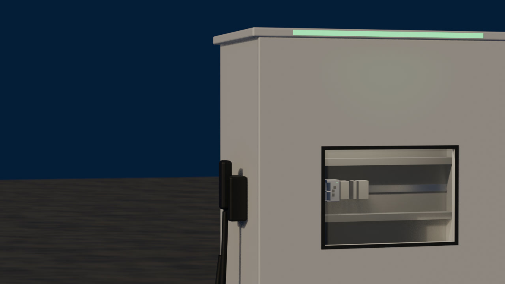

01 · Fit
Right next to the supply that dips.
Clips onto the 35 mm DIN rail beside the 12 V or 24 V control supply, on a normal service visit. It taps the control supply; the charger’s own wiring and software stay as they are.
RailSentinel-24 is a small DIN-rail module for DC fast-charger cabinets. It records what the DC control supply (12 V or 24 V) does, so you see what it did before a charger went down.
Pilot units on loan under a test agreement, no lock-in.
Your charger is down. Nobody saw why.
When it’s the control supply, the charger logs the reset; usually nothing logs the supply.
RS-24 clips on next to it and records what it did.
No change to the charger.
Your team sees what the control supply did, not just “faulted”.
So the alarm reaches whoever fixes it: on the technician’s phone, or in your own system (Modbus TCP, local MQTT).
Rule the power in or out, before you drive out.
Know what to bring. Back online sooner.
If it was the supply: check the power supply and its wiring, and bring a spare. If it wasn’t: cross the supply off and go straight to the charger.
Pilot units on loan under a test agreement, no lock-in.
Clips onto the 35 mm DIN rail beside the 12 V or 24 V control supply, on a normal service visit. It taps the control supply; the charger’s own wiring and software stay as they are.
It never switches the charger’s power. An isolation barrier, designed for reinforced insulation, keeps the supply wiring apart from the Wi-Fi, network and service-laptop side.
The base unit already reports over Wi-Fi (Modbus TCP, MQTT). Plug-in modules add Modbus RTU over RS-485 for your EMS, PLC or SCADA, and the supply current next to its voltage, so you see whether a dip came with a load step.

Clips onto the 35 mm DIN rail beside the 12 V or 24 V control supply, on a normal service visit. It taps the control supply; the charger’s own wiring and software stay as they are.

It never switches the charger’s power. An isolation barrier, designed for reinforced insulation, keeps the supply wiring apart from the Wi-Fi, network and service-laptop side.

The base unit already reports over Wi-Fi (Modbus TCP, MQTT). Plug-in modules add Modbus RTU over RS-485 for your EMS, PLC or SCADA, and the supply current next to its voltage, so you see whether a dip came with a load step.
In your own system (Modbus, MQTT), or on the technician's phone over the site Wi-Fi.
Dips on the 12 V or 24 V DC control supply, timestamped and kept on the module.
Supply voltage trended per site and fleet. For 12 V and 24 V supplies.
Monitoring only: it never switches the charger’s power. Isolated sensing and communication sides. Its one output contact is wired in only if you choose. Not a certified safety component.

See which chargers’ control supply keeps dipping, site by site.
Know what the control supply did before you drive out.
Records of the control supply from field units, to settle “no fault found” returns.
For 12 V and 24 V DC control supplies. Chargers first.
For 12 V and 24 V DC control supplies.
Preliminary
Narrow DIN module. Wi-Fi. Fit and forget.
DIN coupler with expansion slots.
Bare PCB for factory integration.
Know what to bring. Back online sooner.
If it was the supply: check the power supply and its wiring, and bring a spare. If it wasn’t: cross the supply off and go straight to the charger.
Request a pilot
Limited pilot slots from Q2 2027 · test units on loan under a test agreement · no lock-in.
Fleet size + the chargers that keep failing.
hello@morgen-tech.comRS-24-M · 12 / 24 V · Modbus TCP · MQTT · data pipeline.
sales@morgen-tech.comDesign documents for pilot partners under NDA: info@morgen-tech.com